Subsection4.A.1Sets
In this section, we will familiarize ourselves with set operations and notations, so that we can apply these concepts to both counting and probability problems. We begin by defining some terms.
A set is a collection of objects, and its members are called the elements of the set. We name the set by using capital letters, and enclose its members in braces \(\{\cdots\}\text{.}\) Suppose we need to list the members of the chess club. We use the following set notation:
\begin{gather*}
C=\{\text{Ken, Bob, Tran, Shanti, Eric}\}
\end{gather*}
A set that has no members is called an empty set. The empty set is denoted by the symbol \(\emptyset\) or with empty curly braces \(\{\}\text{.}\)
Two sets are equal if they have the same elements.
A set \(A\) is a subset of a set \(B\) if every member of \(A\) is also a member of \(B\text{.}\) For example, suppose \(C=\{\text{Al, Bob, Chris, David, Ed}\}\) and \(A=\{\text{Bob, David}\}\text{.}\) Then \(A\) is a subset of \(C,\) written as \(A\subseteq C.\)
Notes: Every set is a subset of itself, \(A\subseteq A.\) The empty set is a subset of every set, \(\emptyset \subseteq A.\)
Example4.A.1Subsets
List all the subsets of the set of primary colors \(P = \{ \text{red, yellow, blue} \}\text{.}\)
The subsets are:
\begin{align*}
\{\},\amp\amp\amp\{\text{red}\},\amp\amp\{\text{yellow}\},\amp\amp\{\text{blue}\},\\
\amp\amp\amp\{\text{red, yellow}\},\amp\amp\{\text{yellow, blue}\},\amp\amp\\
\amp\amp\amp\{\text{red, blue}\},\amp\amp\text{and}\amp\amp\{\text{red, yellow, blue}\}
\end{align*}
Note that the empty set \(\{ \}\) is a subset of every set, and a set is a subset of itself.
Note also that there are \(8= 2^3\) subsets of the original set containing \(3\) elements. In general, a set with \(n\) elements will have \(2^n\) subsets! \(\checkmark\)
WeBWorK: Entering Elements in Sets
Indicate a set with curly braces on each end of the list of elements: {1,2,3}.
Use a comma between elements in a set: {red, yellow} and between subsets: {red},{red, yellow}.
Denote the empty set with braces with no elements: {} or type the word NONE.
Subsection4.A.4Intervals as Sets
Intervals represent sets of numbers. This means we can perform set operations on intervals. For example:
Example4.A.5Union of Two Overlapping Intervals
Consider the below graph of two intervals. The union of the points in the graph would be all values in either the top interval OR in the bottom (or in both).
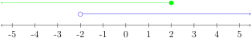
For example, \(-3\) is in the top interval \((-\infty, 2]\text{,}\) so \(-3\) is in the union.
Also \(2.7\) is in the bottom interval \((-2, \infty)\text{,}\) so \(2.7\) is in the union.
And \(-\frac{1}{3}\) is in both intervals, so \(-\frac{1}{3}\) is in the union.
Notice every real number is either in the top or bottom interval (or in both).
\begin{align*}
(-\infty, \infty)\amp\amp\amp \text{An interval describing the union}\checkmark\\
-\infty \lt x \lt \infty \amp\amp\amp \text{An inequality describing the union}\checkmark
\end{align*}
WeBWorK: Entering all Real Numbers
Type (-inf,inf) for the interval \((-\infty, \infty)\text{.}\)
Type -inf < x < inf for the inequality \(-\infty \lt x \lt \infty\text{.}\)
Equivalently, you may type all real numbers.
Example4.A.6Intersection of Two Overlapping Intervals
Consider the same two intervals of Example 4.A.5. The intersection of the points in the graph would be all values in both the top interval AND the bottom. This is points common to both (or in the overlap).
For example, \(-3\) is NOT in the bottom interval \((-2, \infty),\) so \(-3\) is NOT in the intersection.
Also, \(2.7\) is NOT in the top interval \((-\infty, 2],\) so \(2.7\) is NOT in the intersection.
But since \(-\frac{1}{3}\) is in both intervals, \(-\frac{1}{3}\) IS in the intersection.
Example4.A.7Union of Two Overlapping Intervals
Describe the union of the points in the graph.
Recall the union of the points in the graph would be all values in either the first interval OR in the second (or in both).
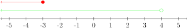
For example, \(-3\) is in both the top and bottom intervals, so \(-3\) is in the union.
And \(2.7\) is in the bottom interval, so \(2.7\) is in the union.
But \(5\) is in neither interval, so \(5\) is NOT in the union.
Notice every number in the bottom interval is in the union (as is every number in the top interval).
\begin{align*}
(-\infty, 4)\amp\amp\amp \text{An interval describing the union}\checkmark\\
x \lt 4 \amp\amp\amp \text{An inequality describing the union}\checkmark
\end{align*}
Example4.A.8Intersection of Two Overlapping Intervals
Describe the intersection of the points in the graph.
Consider the same two intervals of Example 4.A.7. Recall the intersection of the points in the graph would be all values in both the first interval AND the second. This is points common to both (or in the overlap).
For example, \(-3\) is in both the top and bottom intervals, so \(-3\) is in the intersection.
But \(2.7\) is in the bottom interval but not the top, so \(2.7\) is NOT in the intersection.
Also \(5\) is in neither interval, so \(5\) is NOT in the intersection.
Notice the overlap of the two intervals is all numbers in the first interval.
\begin{align*}
(-\infty, -3] \amp\amp\amp \text{An interval describing the intersection}\checkmark\\
x \leq -3 \amp\amp\amp \text{An inequality describing the intersection}\checkmark
\end{align*}
Example4.A.9Union of Two Non-Overlapping Intervals
Describe the union of the points in the graph.
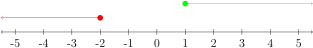
Recall the union of the points in the graph would be all values in either the first interval OR in the second (or in both).
WeBWorK: Entering Two Intervals or Two Inequalities
For interval notation, the upper case "U" means that values from either interval are solutions: (-inf, -2] U [1, inf).
For \(x \leq -2 \text{ or } x \geq 1\text{:}\)
For inequality notation type x < = -2 or x > = 1
Be sure to include the word "or" between the solutions.
Example4.A.10Intersection of Two Non-Overlapping Intervals
Describe the intersection of the points in the graph.
Consider the same two intervals of Example 4.A.9.
The intersection of the points in the graph would be all values common to both (overlap).
WeBWorK: Entering Empty Sets
Type None for empty sets.
Subsection4.A.6Complement of a Set
Let \(A\) be any set, then the complement of set \(A\text{,}\) written as \(A'\text{,}\) is the set consisting of elements in the universal set \(U\) that are not in \(A\text{.}\) When you see the complement symbol \('\) you should think not or outside.
Example4.A.11Set Complement
Let the universal set \(U=\{0,1,2,3,4,5,6,7\}\text{.}\) Let \(A=\{0,1,2,3,6\}\text{.}\)
\begin{align*}
\text{Find \(A'\)} \amp\amp\amp \text{The complement of \(A\) is the collection of all elements in \(U\)}\\
\amp\amp\amp\text{that are NOT in \(A\)}\\
\text{\(A'=\{4,5,7\}\)} \amp\amp\amp \text{Our Solution}\checkmark
\end{align*}
Example4.A.12Union, Intersection, Complement
Let the universal set \(U=\{\text{red, orange, yellow, green, gold, blue, indigo, violet, purple, black}\}\text{,}\) \(P = \{ \text{red, yellow, blue} \}\text{,}\) \(Y = \{ \text{purple, gold} \}\) and \(N = \{ \text{red, black} \}\text{.}\)
\begin{align*}
P\cup N=\{\text{red, yellow, blue, black}\} \amp\amp\amp \text{The union is the set of all elements}\\
\amp\amp\amp\text{that are either in \(P\) OR in \(N\), or in both}\\
P\cap N=\{\text{red}\}\amp\amp\amp\text{The intersection is the set of all elements}\\
\amp\amp\amp\text{that are common to both \(P\) AND \(N\)}\\
P\cap Y=\{ \} \amp\amp\amp \text{\(P\) and \(Y\) have no elements in common,}\\
\amp\amp\amp\text{\(P\) and \(Y\) are disjoint}\\
P'=\{\text{orange, green, gold,}\amp\amp\amp\\
\text{indigo, violet, purple, black}\}\amp\amp\amp\text{The elements in \(U\) NOT in \(P\checkmark\)}
\end{align*}
Example4.A.13Set Operations
Let the universal set \(U=\{0,1,2,3,4,5,6,7\}\text{.}\) Let \(A=\{0,1,2,3,6\}\) and \(B=\{0, 3, 4, 6\}\text{.}\)
\begin{align*}
\text{Determine \(A\cap B'\)} \amp\amp\amp \text{First identify the set \(B'\): elements in \(U\) NOT in \(B\)}\\
\text{\(B'=\{1,2,5,7 \}\)} \amp\amp\amp \text{Intersection is AND: elements in \(A\) AND \(B'\)}\\
\text{\(A\cap B'=\{1,2 \}\)} \amp\amp\amp \text{Our Solution}\checkmark
\end{align*}
Example4.A.14Set Operations
Let the universal set \(U=\{0,1,2,3,4,5,6,7\}\text{.}\) Let \(A=\{0,1,2,3,6\}\) and \(B=\{0, 3, 4, 6\}\text{.}\)
\begin{align*}
\text{Find \((A\cup B)'\)} \amp\amp\amp \text{Parentheses first: identify \((A\cup B)\)--union is OR }\\
\text{\((A\cup B)=\{0,1,2,3,4,6 \}\)} \amp\amp\amp \text{Next consider the complement--OUTSIDE this set}\\
\text{\((A\cup B)'=\{5,7 \}\)} \amp\amp\amp \text{Our Solution}\checkmark
\end{align*}
Subsection4.A.7Venn Diagrams
In the late 1800s, an English logician named John Venn developed a method to visualize relationships between sets. He represented these relationships using diagrams, which are now known as Venn diagrams. A Venn diagram represents a set as the interior of a circle. Often two or more circles are enclosed in a rectangle where the rectangle represents the universal set. To visualize an union or intersection of a set is easy. Below are a few examples.
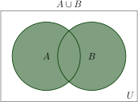
The shaded region represents the collection of all elements that are either in \(A\) or in \(B,\) or in both \(A\) and \(B.\)
The region is \(A\cup B.\)
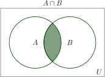
The shaded region represents the collection of all elements that are common to both \(A\) and \(B.\)
The region is \(A\cap B.\)
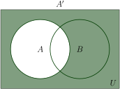
The shaded region represents the collection of all elements that are NOT in \(A.\)
The region is \(A'.\)
We will now use Venn diagrams to sort various populations and count objects. We use the notation \(n(A)\) to represent the number of elements in set \(A\text{.}\) For example, if \(A=\{\text{Maggie, Joe, Ben, Susanne}\}\) then \(n(A)=4\text{.}\)
Example4.A.152-Group Venn Diagram
Suppose a survey of car enthusiasts showed that over a certain time period, \(30\) drove cars with automatic transmissions, \(20\) drove cars with standard transmissions, and \(12\) drove cars of both types. If every person in the survey drove cars with one of these transmissions, how many people participated in the survey?
Let set \(A\) represent those surveyed with automatic transmissions.
Let set \(S\) represent those surveyed with standard transmissions.
Since \(12\) drove cars of both types, record \(\color{red}{12}\) in \(A\) AND \(S\) \(=A\cap S\text{.}\)
That is \(n(A\cap S)=\color{red}{12}\text{.}\)
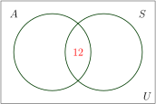
Let \(\color{blue}{x}\) be the number in \(A\) but NOT in \(S\text{.}\) Then \(\color{blue}{x}=n(A\cap S')\text{.}\)
Let \(\color{green}{y}\) be the number in \(S\) but NOT in \(A\text{.}\) Then \(\color{green}{y}=n(S\cap A')\text{.}\)
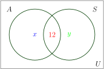
Because \(30\) people drove cars with automatic transmissions, the circle \(A\) must contain \(30\) total people.
This means \(x + 12 = 30\text{.}\) Subtract \(12\) from both sides to get \(x = 18\text{.}\)
Record \(\color{blue}{18}\) in \(A\) but NOT in \(S\text{.}\)
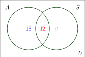
Because \(20\) people drove cars with standard transmissions, the circle \(S\) must contain \(20\) total people.
This means \(y + 12 = 20\text{.}\) Subtract \(12\) from both sides to get \(y = 8\text{.}\)
Record \(\color{green}{8}\) in \(S\) but NOT in \(A\text{.}\)
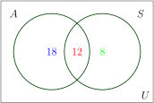
Now that all the information is sorted out, it is easy to read from the diagram that:
\(\color{blue}{18}\) people drove cars with automatic transmissions only, \(\color{red}{12}\) people drove both types of cars, and \(\color{green}{8}\) drove cars with standard transmissions only.
\(38\) people participated in the survey.\(\checkmark\)
Example4.A.162-Group Venn Diagram
A survey of \(100\) people in California indicates that \(60\) people have visited Disneyland, \(15\) have visited Knott's Berry Farm, and \(6\) have visited both. How many people have visited neither place?
Let set \(D\) represent those surveyed who have visited Disneyland.
Let set \(K\) represent those surveyed who have visited Knott's Berry Farm.
Since \(6\) have visited both, record \(\color{red}{6}\) in \(=D\cap K\text{.}\)
Let \(\color{blue}{x}=n(D\cap K')\text{.}\)
Let \(\color{green}{y}=n(K\cap D')\text{.}\)
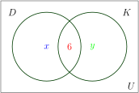
Because \(60\) people visited Disneyland, \(D\) must contain \(60\) total people.
This means \(x + 6 = 60\text{.}\) Subtract \(6\) from both sides to get \(x = 54\text{.}\)
Record \(\color{blue}{54}\) in \(D\) but NOT in \(K\text{.}\)
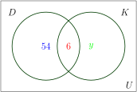
Because \(15\) people visited Knott's, \(K\) must contain \(15\) total people.
This means \(y + 6 = 15\text{.}\) Subtract \(6\) from both sides to get \(y = 9\text{.}\)
Record \(\color{green}{9}\) in \(K\) but NOT in \(D\text{.}\)
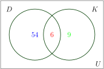
Let \(\color{brown}{z}\) be the number in the rectangle representing the universal set \(U\) but NOT in \(D\) nor in \(K\text{.}\)
Thus \(z=n(D\cup K)'\text{.}\)
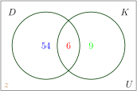
Since \(100\) people participated in the survey, \(U\) must contain \(100\) objects.
This means \(54+6+9+z = 100\) or \(69+z=100\text{.}\) Subtract \(69\) from both sides to get \(z = 31\text{.}\)
Record \(\color{brown}{31}\) in \((D\cup K)'\text{.}\)
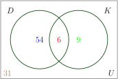
\(31\) people have visited neither place.\(\checkmark\)
Looking back at the final Venn diagram of Example 4.A.16 in which \(100\) people in California were surveyed, we can organize the results in a two-way table as follows:
|
Disneyland (\(D\)) |
Not Disneyland (\(D'\)) |
Total |
| Knott's (\(K\)) |
\(\color{red}{6}\) |
\(\color{green}{9}\) |
\(15\) |
| Not Knott's (\(K'\)) |
\(\color{blue}{54}\) |
\(\color{brown}{31}\) |
\(85\) |
| Total |
\(\fbox{60}\) |
\(40\) |
\(100\) |
Notice from the above table, we can determine particular counts. For example, at the bottom of the Disneyland column is the boxed number \(\fbox{60}\text{,}\) which is the total number of people surveyed who visited Disneyland. The red \(\color{red}{6}\) is the intersection of row Knott's and column Disneyland, which is \(n(D\cap K)\text{,}\) the number of people who visited both parks. The \(\color{brown}{31}=n(D'\cap K')\) means \(\color{brown}{31}\) did not attend either park.
We are not limited to \(2\) circles. Suppose a survey of \(100\) exercise conscious people resulted in the following information:
- \(50\) jog, \(30\) swim, and \(35\) cycle
- \(14\) jog and swim
- \(7\) swim and cycle
- \(9\) jog and cycle
- \(3\) people take part in all three activities
Since we have \(3\) exercise categories (jog, swim, cycle) we will use three circles, one for each group. Use the exercise survey results to assign a number to each region in a corresponding Venn diagram and then answer the given questions in the following examples:
Example4.A.173-Group Venn Diagram
Use the exercise survey results above to assign a number to each region in a corresponding Venn diagram.
Let set \(J\) represent the joggers, set \(S\) the swimmers and set \(C\) the cyclers.
We always begin by first assigning the number to the innermost region and then working our way out.
Since \(3\) people participate in all three activities place a \(\color{red}{3}\) in the intersection of all three circles \(=J\cap S\cap C\text{.}\)
Let \(\color{blue}{x}=n((J\cap S)\cap C')\) (people that jog and swim but don't cycle).
Let \(\color{green}{y}=n((J\cap C)\cap S')\text{.}\)
Let \(\color{brown}{z}=n((S\cap C)\cap J')\text{.}\)
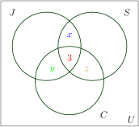
Since \(14\) jog and swim \(x+3=14\text{,}\) so \(\color{blue}{x = 11}\text{.}\)
Since \(9\) jog and cycle \(y+3=9\text{,}\) so \(\color{green}{y = 6}\text{.}\)
Since \(7\) swim and cycle \(z+3=7\text{,}\) so \(\color{brown}{z = 4}\text{.}\)
After replacing \(x,y,z\) with these values label the regions \(\color{red}{m}, \color{blue}{n},\color{green}{ p}\text{.}\)
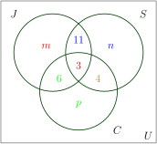
Since \(50\) people jog \(m + 11+3+6=50\text{,}\) so \(\color{red}{m =30 }\text{.}\)
Since \(30\) swim \(n+11+3+4=30\text{,}\) so \(\color{blue}{n = 12}\text{.}\)
Since \(35\) cycle \(p+6+3+4=35\text{,}\) so \(\color{green}{p = 22}\text{.}\)
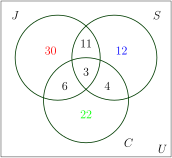
By adding all the entries in all three sets, we get a sum of \(88\text{.}\)
Since \(100\) people were surveyed, the number inside the universal set but outside of all three sets is \(100-88=\color{red}{12}\text{.}\)
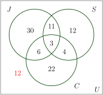
Our Solution\(\checkmark\)
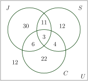
Example4.A.183-Group Venn Diagram
Use the completed Venn diagram from Example 4.A.17 to determine the number of people surveyed who jog but do not swim or cycle.
The region which contains joggers who do not swim or cycle is highlighted in \(\color{red}{\text{red}}\text{.}\)
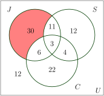
Our Solution: \(30\) people jog but do not swim or cycle.\(\checkmark\)
Example4.A.193-Group Venn Diagram
Use the completed Venn diagram from Example 4.A.17 to determine the number of people surveyed who take part in only one of the activities.
The regions which contain people taking part in exactly one activity are highlighted in \(\color{blue}{\text{blue}}\text{.}\)
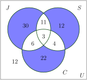
Our Solution: \(30+12+22=64\) people jog but do not swim or cycle.\(\checkmark\)
Example4.A.203-Group Venn Diagram
Use the completed Venn diagram from Example 4.A.17 to determine the number of people surveyed who do not take part in any of these activities.
The region which contains people who do not take part in any of these activities is highlighted in \(\color{green}{\text{green}}\text{.}\)
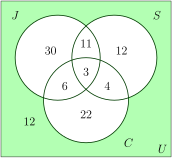
Our Solution: \(12\) people do not take part in any of these activities.\(\checkmark\)
Subsection4.A.8Tree Diagrams and the Multiplication Axiom
In this section, we are developing counting techniques that will be used in Section 4.C to study probability. One of the most fundamental of such techniques is called the Multiplication Axiom. Before we introduce the multiplication axiom, we first consider some examples.
Example4.A.212-Step Tree Diagram
A restaurant has a special "choose \(2\) dinner deal": for one low price a customer may select one of two appetizers and one of four main courses. How many different dinner combinations consisting of one appetizer and one main course are possible?
Label the two appetizers \(a_1\) and \(a_2\text{.}\)
Label the four main dishes \(m_1, m_2, m_3\) and \(m_4\text{.}\)
Create a tree diagram for this problem.
- Since we may select one of two appetizers, the tree begins with two branches, one for each of \(a_1\) and \(a_2\text{.}\)
- Then since we may select one of four main course options, each of the first two branches leads to four more branches. The tree has \(2\times 4 = 8\) endpoints, one for each of the \(8\) dinner special combinations.
Our Solution: There are \(8\) possible different dinner combinations consisting of one appetizer and one main course. For example, one combination \(a_2, m_3\) represents the choice of appetizer \(2\) with main course \(3\checkmark\text{.}\)
The tree diagram above gives us all eight possibilities. The method involves two steps. First we choose an appetizer. We have two choices: \(a_1\) or \(a_2\text{.}\) If we choose \(a_1\text{,}\) we have four main dishes to go with it; \(m_1, m_2, m_3\) and \(m_4\text{.}\) Similarly if we choose \(a_2\text{,}\) we can select any one of the four main dishes, again. The tree diagram helps us visualize these possibilities.
The reader should note that the process involves two steps. For the first step of choosing an appetizer, there are two choices, and for each choice of an appetizer, there are four choices of a main dish. So altogether there \(2\cdot 4=8\) possibilities. If, in the above Example 4.A.21, we add a dessert, we have the following problem:
Example4.A.223-Step Tree Diagram
A restaurant has a special "choose \(3\) dinner deal": for one low price a customer may select one of two appetizers, one of four main courses, and one of three desserts. How many different dinner combinations consisting of one appetizer, one main course and one dessert are possible?
- Label the two appetizers \(a_1\) and \(a_2\text{.}\)
- Label the four main dishes \(m_1, m_2, m_3\) and \(m_4\text{.}\)
- Label the three desserts \(d_1, d_2\) and \(d_3\text{.}\)
The tree diagram at the right results. The tree has \(2\times 4\times 3 = 24\) endpoints, one for each of the \(24\) dinner special combinations.
Our Solution: There are \(24\) possible different dinner combinations consisting of one appetizer, one main course, and one dessert.\(\checkmark\)
The important thing to observe here, again, is that this is a three step process. There are two choices for the first step of choosing an appetizer. For each choice of a appetizer, there are four choices of a main course, and for each combination of an appetizer and main course, there are three choices of selecting a dessert. All in all, we have \(2\times 4\times 3 = 24\) different possibilities.
The tree diagrams help us visualize the different possibilities, but they are not practical when the possibilities are numerous. Besides, we are mostly interested in counting the number of elements in the set and not the actual possibilities. But once the problem is envisioned, we can solve it without a tree diagram. The two examples we just solved may have given us a clue to do just that.
Let us now try to solve Example 4.A.22 without a tree diagram. Recall that the problem involved three steps: choosing an appetizer, choosing a main course, and choosing a dessert. The number of ways of choosing each are listed below:
| appetizer |
main course |
dessert |
| \(2\) |
\(4\) |
\(3\) |
By multiplying these three numbers we get \(2\cdot 4\cdot 3=24\text{,}\) which is what we got when we did the problem using a tree diagram. The procedure we just employed is called the multiplication axiom:
The Multiplication Axiom: If a task can be done in \(m\) ways, and a second task can be done in \(n\) ways, then the operation involving the first task followed by the second can be performed in \(m\cdot n\) ways.
The general multiplication axiom is not limited to just two tasks and can be used for any number of tasks.
Example4.A.23Multiplication Axiom
A truck license plate consists of a letter followed by four digits. How many such license plates are possible?
Since there are \(26\) letters and \(10\) digits, we have the number of choices for each listed in the below table.
| Letter |
Digit |
Digit |
Digit |
Digit |
| \(26\) |
\(10\) |
\(10\) |
\(10\) |
\(10\) |
\begin{align*}
26\cdot 10 \cdot 10 \cdot 10 \cdot 10\amp\amp\amp\text{Multiply the possibilities using the Multiplication Axiom}\\
260,000\amp\amp\amp\text{Our Solution:}
\end{align*}
There are \(260,000\) possible such license plates.\(\checkmark\)
Example4.A.24Multiplication Axiom
In how many different ways can a \(3\)-question true-false test be answered?
Since there are two choices for each question, we have:
| Question 1 |
Question 2 |
Question 3 |
| \(2\) |
\(2\) |
\(2\) |
We list all eight possibilities below:
\begin{gather*}
TTT, TTF, TFT, TFF, FTT, FTF, FFT, FFF
\end{gather*}
The reader should note that the first letter in each possibility is the answer corresponding to the first question, the second letter corresponds to the answer to the second question and so on. For example, \(TFF\text{,}\) says that the answer to the first question is given as true, and the answers to the second and third questions false.
Example4.A.25Multiplication Axiom
In how many different ways can four people be seated in a row?
Suppose we put four chairs in a row, and proceed to put four people in these seats.
There are four choices for the first chair we choose. Once a person sits down in that chair, there are only three choices for the second chair, and so on. We list as shown below:
| Choices for chair 1 |
Choices for chair 2 |
Choices for chair 3 |
Choices for chair 4 |
| \(4\) |
\(3\) |
\(2\) |
\(2\) |